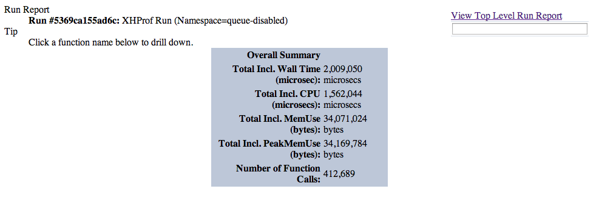
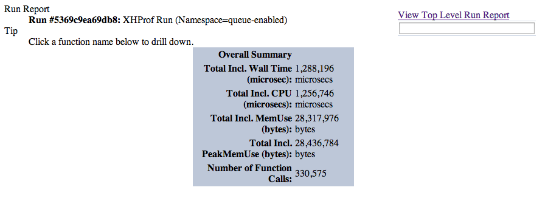
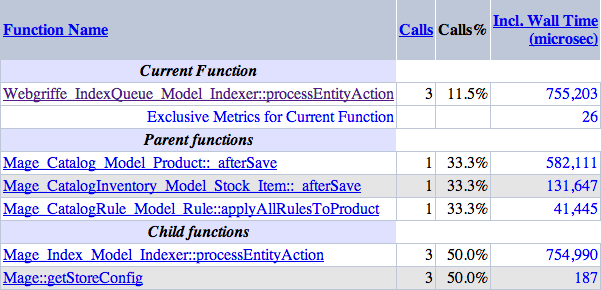
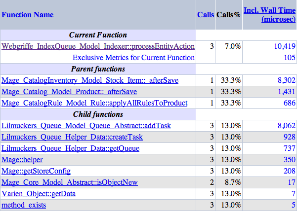

Manuele Menozzi
Senior PHP Developer @ Webgriffe®
Zend Certified PHP Engineer
Proud GrUSP & PUG MoRe member
Email: mmenozzi@webgriffe.com / Twitter: @mmenozzi
The ones we can easly integrate with Magento are:
Working code on GitHub
github.com/webgriffe/index-queue-extension
Product save in Magento (v. 1.8.1.0) admin panel with sample data
With queueing disabled

Product save in Magento (v. 1.8.1.0) admin panel with sample data
With queueing enabled

Product save in Magento (v. 1.8.1.0) admin panel with sample data
With queueing disabled

Product save in Magento (v. 1.8.1.0) admin panel with sample data
With queueing enabled
